Subdivision Surfaces
Subdvision methods progressively refine a discrete mesh and converge to a smooth surface. This allows to perform an interpolation or approximation of a given coarse dataset.
Contents
Installing toolboxes and setting up the path.
You need to download the following files: signal toolbox, general toolbox, graph toolbox and wavelet_meshes toolbox.
You need to unzip these toolboxes in your working directory, so that you have toolbox_signal, toolbox_general, toolbox_graph and toolbox_wavelet_meshes in your directory.
For Scilab user: you must replace the Matlab comment '%' by its Scilab counterpart '//'.
Recommandation: You should create a text file named for instance numericaltour.sce (in Scilab) or numericaltour.m (in Matlab) to write all the Scilab/Matlab command you want to execute. Then, simply run exec('numericaltour.sce'); (in Scilab) or numericaltour; (in Matlab) to run the commands.
Execute this line only if you are using Matlab.
getd = @(p)path(p,path); % scilab users must *not* execute this
Then you can add the toolboxes to the path.
getd('toolbox_signal/'); getd('toolbox_general/'); getd('toolbox_graph/'); getd('toolbox_wavelet_meshes/');
Subdivision of a Regular Polyedra
Starting from a control mesh which is a regular polyhedra, one can construct a sequence of mesh that converge to a sphere by subdividing each edge into two edges, and each triangle into four smaller triangles. The position of the mid points are projected onto the sphere.
Compute two examples of initial base mesh.
[vertex1,face1] = compute_base_mesh('oct'); [vertex0,face0] = compute_base_mesh('ico');
Display it.
clf; subplot(1,2,1); plot_mesh(vertex1,face1); shading('faceted'); lighting('flat'); view(3); axis('tight'); subplot(1,2,2); plot_mesh(vertex0,face0); shading('faceted'); lighting('flat'); view(3); axis('tight');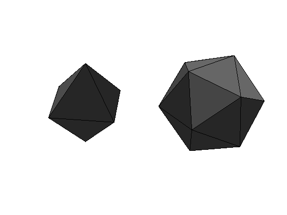
Initialize the subdivision.
face = face0; vertex = vertex0;
Compute the set of edges.
edge = compute_edges(face);
Number of vertex and edges.
n = size(vertex,2); ne = size(edge,2);
Compute the number of the three edges associated to each face.
A = sparse([edge(1,:);edge(2,:)],[edge(2,:);edge(1,:)],[n+(1:ne);n+(1:ne)],n,n); v12 = full( A( face(1,:) + (face(2,:)-1)*n ) ); v23 = full( A( face(2,:) + (face(3,:)-1)*n ) ); v31 = full( A( face(3,:) + (face(1,:)-1)*n ) );
Compute the new faces, each old face generates 4 faces.
face = [ cat(1,face(1,:),v12,v31),... cat(1,face(2,:),v23,v12),... cat(1,face(3,:),v31,v23),... cat(1,v12,v23,v31) ];
Add new vertices at the edges center.
vertex = [vertex, (vertex(:,edge(1,:))+vertex(:,edge(2,:)))/2 ];
Project the points on the sphere.
d = sqrt( sum(vertex.^2,1) ); vertex = vertex ./ repmat( d, [size(vertex,1) 1]);
Display before/after subdivision.
clf; subplot(1,2,1); plot_mesh(vertex0,face0); shading('faceted'); lighting('flat'); view(3); axis('tight'); subplot(1,2,2); plot_mesh(vertex,face); shading('faceted'); lighting('flat'); view(3); axis('tight');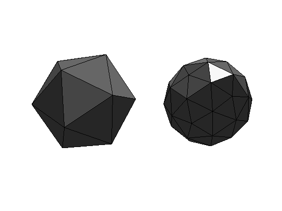
Exercice 1: (check the solution) Perform the full subdivision.
exo1;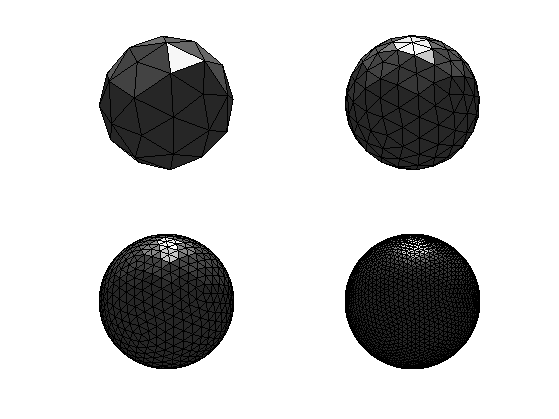
Exercice 2: (check the solution) Try with other control meshes.
exo2;
Triangulated Mesh Subdivision
The same method can be applied to an arbitrary control mesh, but without the projection on the sphere. More clever interpolations should be used to avoid having a simple piecewise linear surface.
Load the base control mesh.
name = 'mannequin';
[vertex0,face0] = read_mesh(name);
Display it.
options.name = name; clf; plot_mesh(vertex0,face0,options); shading('faceted'); lighting('flat'); axis('tight');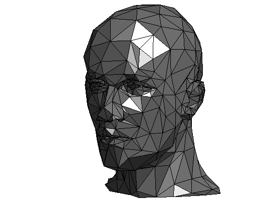
Initialize.
face = face0; vertex = vertex0;
Perform the subdivision.
edge = compute_edges(face);
n = size(vertex,2);
ne = size(edge,2);
% Compute the number of the three edges associated to each face.
A = sparse([edge(1,:);edge(2,:)],[edge(2,:);edge(1,:)],[n+(1:ne);n+(1:ne)],n,n);
v12 = full( A( face(1,:) + (face(2,:)-1)*n ) );
v23 = full( A( face(2,:) + (face(3,:)-1)*n ) );
v31 = full( A( face(3,:) + (face(1,:)-1)*n ) );
Compute the new faces, each old face generates 4 faces.
face_old = face; face = [ cat(1,face(1,:),v12,v31),... cat(1,face(2,:),v23,v12),... cat(1,face(3,:),v31,v23),... cat(1,v12,v23,v31) ];
Compute the vertex and face ring.
global vring e2f fring facej;
vring = compute_vertex_ring(face);
e2f = compute_edge_face_ring(face_old);
fring = compute_face_ring(face_old);
facej = face_old;
Warning: The value of local variables may have been changed to match the globals. Future versions of MATLAB will require that you declare a variable to be global before you use that variable.
Compute the interpolated position using
for k=n+1:n+ne [e,v,g] = compute_butterfly_neighbors(k, n); vertex(:,k) = 1/2*sum(vertex(:,e),2) + 1/8*sum(vertex(:,v),2) - 1/16*sum(vertex(:,g),2); end
Display before/after subdivision.
clf; subplot(1,2,1); plot_mesh(vertex0,face0,options); shading('faceted'); lighting('flat'); axis('tight'); subplot(1,2,2); plot_mesh(vertex,face,options); shading('faceted'); lighting('flat'); axis('tight');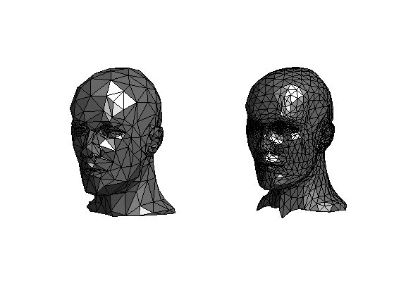
Exercice 3: (check the solution) Perform several steps of subdivision.
exo3;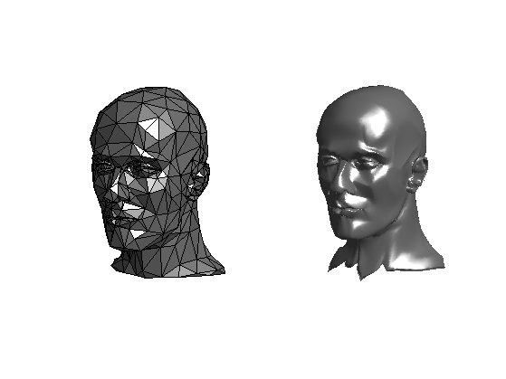
Display the new mesh.
clf; plot_mesh(vertex,face,options); shading('interp'); lighting('phong'); axis('tight');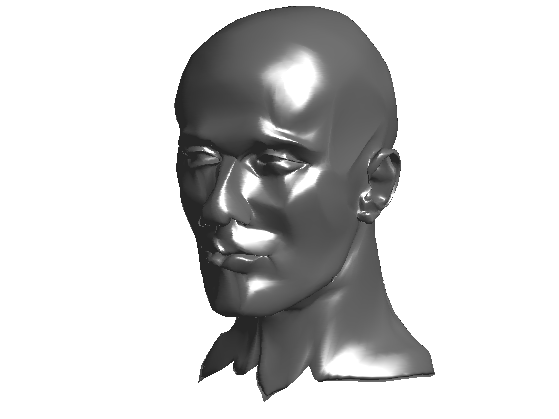
Display the new mesh faceted.
clf; plot_mesh(vertex,face,options); shading('faceted'); lighting('phong'); axis('tight');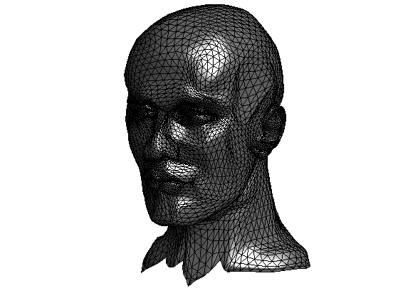
Exercice 4: (check the solution) Try on different 3D models.
exo4;
Exercice 5: (check the solution) Implement another subdivision scheme that is not interpolating, for instance the loop scheme. Be careful about the handling of points that does not have valence 6.
exo5;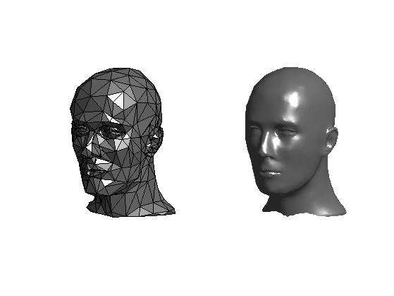
Display the new mesh.
clf; plot_mesh(vertex,face,options); shading('interp'); lighting('phong'); axis('tight');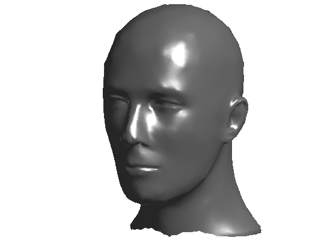
Display the new mesh faceted.
clf; plot_mesh(vertex,face,options); shading('faceted'); lighting('phong'); axis('tight');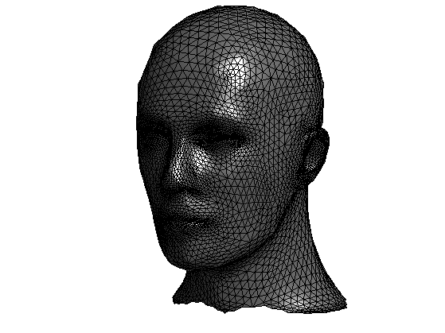
Exercice 6: (check the solution) Implement another subdivision scheme that does not perform a 1:4 split of each face, for instance the sqrt(3) scheme.
exo6;